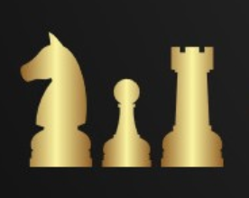

Al ajedrez siempre juegan dos personas, aunque con el avance de la informática ya ¡¡tenemos torneos de ajedrez en el que juegan solo computadoras!! Pero no es lo más frecuente. Un jugador juega con las piezas blancas (en ajedrez hablamos de piezas no de fichas), y el otro jugador juega con las piezas negras. Cada jugador tiene dieciséis piezas al comienzo de la partida: un rey, una dama (no se dice reina), dos torres, dos alfiles, dos caballos y ocho peones. Da clic en leer mas si quieres saber todas las reglas del juego.
El ajedrez tiene una larga historia, lo que hace que sea aún más interesante jugarlo. Para lograr avanzar en este juego es necesario no solo el ingenio, sino la paciencia. Existen muchas reglas y estrategias que es bueno saber, y tanto si eres un gran jugador como si todavía no lo has intentado, seguro estas curiosidades sobre el ajedrez te gustarán. da clic en leer mas si quieres saber grandes curiosidades del ajedrez
Normalmente una partida de ajedrez se gana bien por jaque mate, bien porque el contrario sepa que va a recibir inexorablemente jaque mate y, por ello, abandona. Sin embargo, ganar una partida muchas veces no implica intentar dar mate al rey enemigo. Entre jugadores fuertes, basta en muchas ocasiones con pequeñas consideraciones inapreciables para un aficionado para estar seguros de la victoria. Si deseas saber un poco mas da clic en leer mas